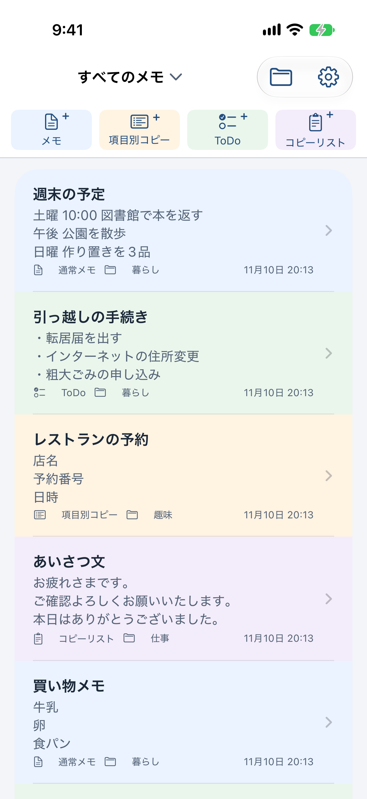

iPhoneアプリ · 公開準備中

主な機能

- 用紙を選ぶ
- 書きたいことに合わせて、4種類の用紙から選べます。
- やることを整理する
- ToDo用紙では、終わった項目にチェックを付けられます。
- 手元に残す
- メモはiPhoneに保存し、必要なときにファイルで書き出せます。
対応環境・入手方法
- 対応OS
- iOS 18.0以降（iPhone）
- 提供条件
- 初回バージョン 1.0.0。無料で提供し、メモ一覧の下端に広告を表示する予定です。
- 入手先
- App Storeで公開準備中です。